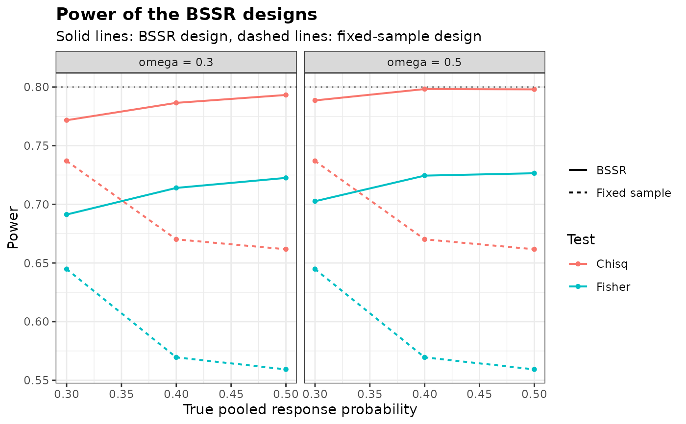

Power and Sample Size of Several Blinded Sample Size Re-estimation Designs
Source:R/BinaryGridBSSR.R
BinaryGridBSSR.RdEvaluates a set of designs with blinded sample size re-estimation (BSSR) for a binary
endpoint over a common set of true pooled response probabilities, by calling
BinaryPowerBSSR for each design, and returns the results as one data
frame with a row for each design and each probability.
Arguments
- design
Data frame with one row per design. Its columns are arguments of
BinaryPowerBSSRother thanpandn.interim, for exampleTest,Delta.A,omegaorr. The interim sample sizes are given by the two columnsn1.interimandn2.interim, and the initial sample sizes either by the columnsN1andN2or by a columnp.plan, see Details. A missing value in a column means that the argument is not given for that design, so that designs specified byomegaand by the interim sample sizes can share one data frame- p
Vector of true pooled response probabilities at which every design is evaluated. Values at which a response probability falls outside the unit interval are dropped for that design, and every design needs at least one value that is kept
- Delta.T
True treatment effect. The default of
NULLuses the assumed effectDelta.Aof each design. It can also be given as a column ofdesign, but not in both places- type1
Logical. If
TRUE, the largest type I error rate of each design and of the corresponding fixed-sample design is added, as computed byBinaryTypeIErrorBSSRwith its default grid ofthetaand the certified maximum. It is taken over the common response probability, or over the boundary of the null hypothesis for a design with a non-inferiority margin. Default isFALSE- verbose
Logical. If
TRUE, a message is issued as each design is evaluated. Default isFALSE- ...
Arguments shared by all designs, with the same names as the columns of
design. An argument may not be given both here and as a column
Value
An object of class bbssr_grid, a data frame with one row for each
design and each element of p that gives response probabilities inside the
unit interval, containing the index design of the design, the columns of
design (other than the sample sizes and Delta.T), and:
- N1, N2
Initial sample sizes
- n1.interim, n2.interim
Interim sample sizes
- Delta.T
True treatment effect
- p, p1, p2
True pooled response probability and those of the two groups
- power.BSSR, power.TRAD
Power of the BSSR design and of the fixed-sample design with the initial sample sizes
- E.N, SD.N
Expected value and standard deviation of the final total sample size
- N.q25, N.q50, N.q75
Quartiles of the final total sample size
- P.N.max
Probability that the final total sample size is the largest the design can reach
The attribute designs has one row per design with its index, the columns of
design other than the sample sizes and Delta.T, the initial and interim
sample sizes and the true effect and, with type1 = TRUE, the largest type I
error rates TIE.BSSR and TIE.TRAD and the values theta.BSSR and
theta.TRAD at which they occur. Warnings and errors raised while a design is
evaluated are prefixed with the index of the design.
Details
When design has a column p.plan instead of the initial sample sizes, the
planning proportions of the two groups are obtained from the pooled proportion
p.plan and the assumed effect Delta.A, as in the re-estimation, and the
initial sample sizes are those of BinarySampleSize with the test, the
level, the target power and the allocation ratio of the design, the method
ss.method of the re-estimation and the rounding rule of the design. The test
Test and the level alpha of the final analysis are used even when the
re-estimation uses another test ss.Test or level ss.alpha.
The quartiles and P.N.max are those of summary.bbssr_powerbssr.
The p-values of each test are kept for the rest of the session, so designs that share
sample sizes are evaluated faster after the first one.
Author
Gosuke Homma (my.name.is.gosuke@gmail.com)
Examples
design <- expand.grid(Test = c('Chisq', 'Fisher'), omega = c(0.3, 0.5),
stringsAsFactors = FALSE)
grid <- BinaryGridBSSR(design, p = c(0.3, 0.4, 0.5), Delta.A = 0.3, N1 = 30, N2 = 30,
r = 1, alpha = 0.025, tar.power = 0.8, ss.method = 'standard')
summary(grid)
#> design Test omega N1 N2 n1.interim n2.interim Delta.T power.BSSR.min
#> 1 1 Chisq 0.3 30 30 9 9 0.3 0.7716927
#> 2 2 Fisher 0.3 30 30 9 9 0.3 0.6913132
#> 3 3 Chisq 0.5 30 30 15 15 0.3 0.7885735
#> 4 4 Fisher 0.5 30 30 15 15 0.3 0.7026320
#> power.BSSR.max power.TRAD.min power.TRAD.max E.N.max
#> 1 0.7932220 0.6617280 0.7369757 81.24550
#> 2 0.7225466 0.5593173 0.6447901 81.24550
#> 3 0.7982702 0.6617280 0.7369757 83.27159
#> 4 0.7265063 0.5593173 0.6447901 83.27159
# \donttest{
plot(grid, colour.by = 'Test', facet.by = 'omega')

# Initial sample sizes from a planning proportion, and the largest type I error rates
design <- data.frame(Delta.A = c(0.2, 0.3), p.plan = 0.4)
grid <- BinaryGridBSSR(design, p = c(0.3, 0.5), omega = 0.5, r = 1, alpha = 0.025,
tar.power = 0.8, Test = 'Chisq', ss.method = 'standard',
type1 = TRUE)
attr(grid, 'designs')
#> design Delta.A p.plan N1 N2 n1.interim n2.interim Delta.T TIE.BSSR
#> 1 1 0.2 0.4 93 93 47 47 0.2 0.03034393
#> 2 2 0.3 0.4 41 41 21 21 0.3 0.02633609
#> theta.BSSR TIE.TRAD theta.TRAD
#> 1 0.07944775 0.02614329 0.351347
#> 2 0.39979935 0.02990483 0.500000
# }